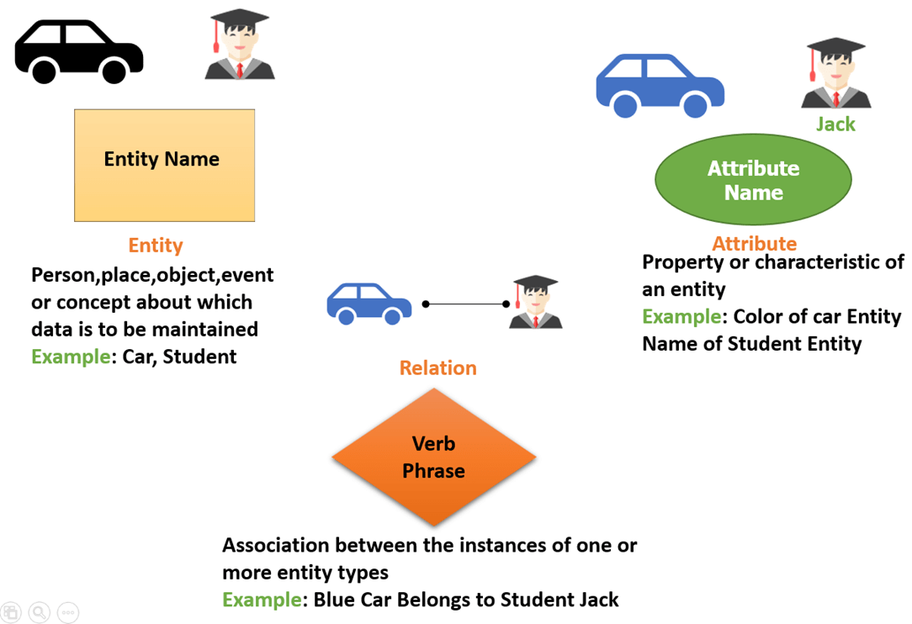
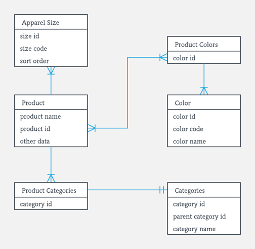

Mis on olemidiagramm?
Olemidiagramm on diagrammitüüp, mida kasutatakse andmebaasistruktuuri kirjeldamiseks. See näitab
millised olemid (tabelid/objektid) süsteemis on, millised on nende atribuudid (väljad/veerud) ja kuidas
need omavahel seotud on ehk teisisõnu olemidiagramm näitab andmebaasi loogilist ülesehitust.
Kus neid kasutatakse?
Olemidiagramme kasutatakse peamiselt andmebaaside kujundamiseks või silumiseks tarkvaratehnika,
äriinfosüsteemide, hariduse ja teaduse valdkonnas.
Olemidiagrammi algne esitus võib olla lihtsustatud, kus olemi ristkülikus on ainult semantiline nimetus.
Seda kutsutakse infoloogiliseks mudeliks.
Peale seda viiakse diagramm andmeloogilisele tasemele. Selle käigus projekteeritakse olemite sisemine struktuur,
mis koosneb olemi omadustest (atribuutidest).
Selleks, et andmeloogilise mudeli alusel luua reaalselt eksisteeriv andmebaas, tuleb andmeloogilise kirjelduse
alusel teha füüsiline modelleerimine.
Füüsilise modelleerimise käigus lisatakse andmeloogilisele mudelile kirjeldused:
- olemitele tabelite nimed, mille all olemite kirjelduse järgi luuakse andmebaasitabelid
- olemitele seoste võtmete kirjeldused (primaarvõtmed ja välisvõtmed)
- olemitele indeksite kirjeldused
- olemite atribuutidele veergude nimed, mille all olemite kirjelduse järgi luuakse andmebaasi tabelite
veerud
- olemite atribuutidele andmetüübid, pikkused ja NULL NOT NULL piirangud
Diagrammi elemendid
Olemidiagrammil on mitmeid kujutamisversioone, siinkohal tooksin välja kõige enim kasutatava meetodi
IE (Information Engineering).
Olemi vahelised seosed esitatakse joontega mille otstel on kindla tähendusega kujutised: üks, mitu, null/ei ühtegi.
Võtmed
- Primaarvõti (Primary Key) - on olemi tabeli unikaalne tunnus (_ID), mille järgi teda tuvastada.
Kui kaks tabelit on andmebaasis omavahel seotud, siis viiakse suhte "üks" otsas oleva tabeli primaarvõti
üle suhte "mitu" poolses olevasse tabelisse. Enda tabelis on _ID unikaalne, siis kõrval tabelis mitte.
- Välisvõti (Foreign Key) - see on teise tabelisse üle kantud tunnus, mille abil tuvastatakse kahe tabeli
vaheline suhe.
- Lihtvõti (Simple Key) - kui võti sisaldab ühte atribuuti
- Liitvõti (Composite Key) - kui võti sisaldab mitu atribuuti
Olemidiagrammi näidis:


ERD-diagramm
ERD-diagramm (guru99)